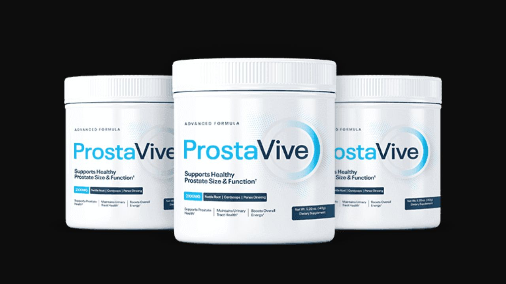

Health Reviews Labs investigated the blood flow mechanism behind ProstaVive — research from Fukushima Medical University that reframes how prostate enlargement is understood. Here's the honest breakdown.
▶ Watch the full ProstaVive video review before deciding

ProstaVive is a prostate health supplement built around a specific 2023 research finding from Fukushima Medical University in Japan: supporting healthy blood flow in and around the prostate can help the body metabolize the stromal cell buildup that drives prostate enlargement. It's a daily powder mixed with water, containing 11 ingredients chosen specifically for circulation support rather than the purely hormonal angle most prostate formulas take.
Stromal cell proliferation is the buildup of cells around the outer edges of the prostate — a process that compresses the urethra and creates the weak urine flow, frequent nighttime bathroom trips, and incomplete bladder emptying that millions of men experience and often accept as inevitable aging. The Fukushima research suggests this buildup may be more manageable than commonly assumed, specifically through supporting prostate blood circulation.
Nitric oxide is the molecule responsible for relaxing the inner muscles of blood vessels, supporting healthy blood flow throughout the body — including to the prostate. Nitric oxide levels decline significantly with age. When nitric oxide drops, blood flow to the prostate decreases, cellular waste accumulates more readily, and the prostate gradually enlarges. ProstaVive's formula was built to support nitric oxide levels and circulation, addressing what the Fukushima researchers identified as a key factor in stromal cell metabolism.
This sits alongside a second, frequently overlooked mechanism: pelvic floor dysfunction. DHT-blocking ingredients like Saw Palmetto address the hormonal driver of prostate enlargement, but tension in the surrounding pelvic floor muscles independently contributes to urinary symptoms — which is why a DHT-only formula often misses half the problem. ProstaVive pairs Saw Palmetto's hormonal action with neurally-active magnesium and Angelica Sinensis to support pelvic floor relaxation and circulation simultaneously.
The most studied natural DHT-blocking compound, inhibiting the 5-alpha reductase enzyme implicated in prostate enlargement.
Traditionally used to support pelvic circulation, complementing the formula's pelvic floor relaxation angle.
Supports nervous system regulation of pelvic floor muscle tension, addressing the non-hormonal half of urinary symptoms.
Originally found in mineral deposits in Tibet, researched for prostate support, detoxification, and healthy inflammation response.
Used for centuries in Southeast Asia for prostate and sexual health, with modern research on prostate blood circulation and testosterone support.
Supports detoxification of toxins that can accumulate in the prostate and the healthy stress response that impacts prostate health.
Researched for supporting healthy blood flow directly to the prostate, alongside cognitive and immune function benefits.
Supporting compounds for hormonal balance, urinary tract health, and antioxidant protection.
Essential micronutrients directly tied to prostate function, sleep quality, and overall vascular health.
ProstaVive's case is built on a genuinely underrepresented angle in prostate health supplements: vascular support rather than purely hormonal blocking. The Fukushima Medical University research gives the formula a specific, citable mechanism rather than vague wellness claims, and the ingredient list — Boron, Tongkat Ali, Panax Ginseng — is coherent with that circulation-focused thesis. For men whose primary symptom is nighttime urinary frequency rather than diagnosed BPH, this angle is worth understanding.
11-Ingredient Formula · Fukushima Research
→ Click Here for Official SiteAs circulation and nitric oxide support begin taking effect.
Continued reduction in urinary frequency translates into more consistent sleep.
Often cascading from the sleep quality improvements established earlier.
Reduced nighttime bathroom trips are typically the first change reported, often within the first two weeks of consistent use. Sleeping through most nights tends to follow by week four, and many users report that the sleep improvement cascades into noticeably better energy and mood by week eight — a pattern consistent with how disrupted sleep from frequent nighttime urination compounds into broader quality-of-life effects.
Pricing reflects typical official-site structure for this category — confirm current pricing on the official site before purchase.
180-Day Money-Back Guarantee
→ Click Here for Official Site